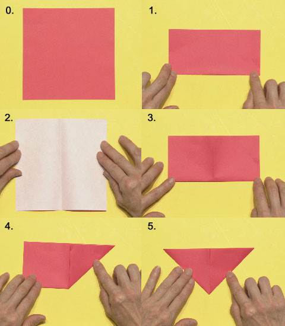
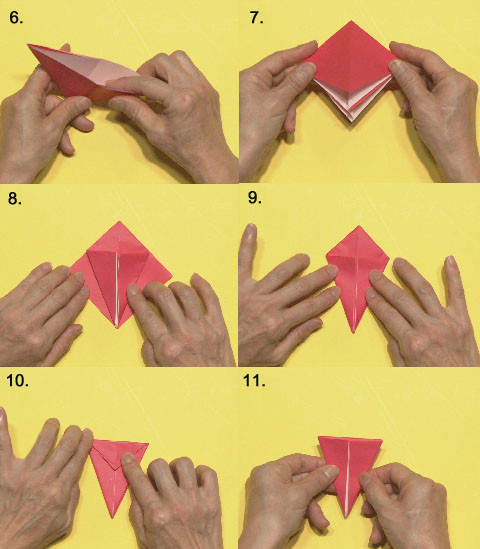
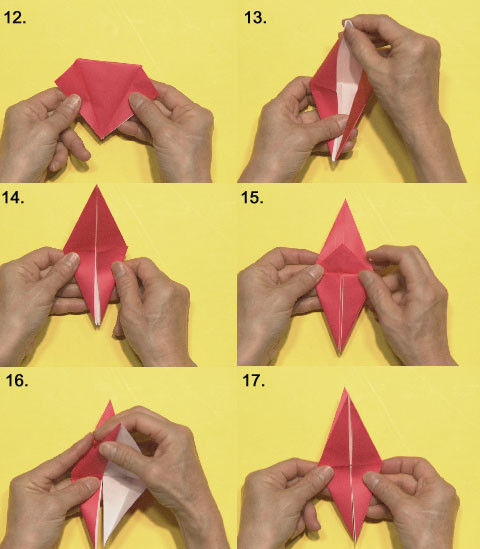
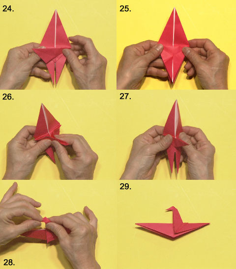

<<2015年9月 | トップページ | 2015年11月>>
2015年10月
色のいろいろ［赤崎月香］
こんにちは ヽ(^▽^@)ノ
赤崎月香です。
だんだんと寒くなってきましたね (((=_=)))
私は、ココアが大好きで、
最近は、温かいココアを飲んでいます♪
この前、お母さんと妹と衣替えをしました。
私が着ていた洋服は、
ほとんど妹のお下がりになりました。(-_-;)
新しい洋服が欲しいなぁ・・・
靴も欲しいなぁ・・・
バッグも欲しいなぁ・・・
でもっ！！！ 今すぐ速攻で欲しいのは！！！
シャーペンの芯！！！ Σ(Ｔ▽Ｔ;)
ピンチ！！！ ピンチ！！！
☆。・:*:・°★,。・:*:・°☆
『 色 』
私の好きな色は、
黄色と水色とオレンジ色です♪Ｏ(≧▽≦)Ｏ♪
１番は、黄色かなぁ～ (*^-^)
元気になる色♪って感じがします。
今使っている文房具も黄色が多いし、
もちろんカラーペンは、蛍光の黄色♪
水色は、すごく晴れた日の空の色 (∇〃)。o〇○
飛行機の窓から見る、
雲と空の水色のグラデーション♪
大好きです (*/∇＼*)
オレンジ色は、間接照明のやわらかい
光がいいよね～♪
眠たくなるよね～♪
学校の部活が終わった帰り道の夕焼け！！！
すごくキレイなオレンジ色をしています。
私のとっておきの夕焼けスポットがあります！！！
坂道をのぼると、建物の向こうに海が見えて、
その海の向こうに、
夕焼けと九州が見えるんです！！！
この夕焼けのオレンジ色を見ながら、
今日の晩ご飯は何かなぁ～って、
ニマニマしながら帰ります♪o(~ー~o)
名前が「 赤崎 」だから、赤色が好き？！
って思いましたか？？？
赤色もキライじゃないけど、
・・・・・・ はずれ ・・・・・・ (￣┰￣*)ゞ
またね～ ヾ(*'-'*)
投稿者:赤崎月香 | 投稿時間:18時45分 | カテゴリ：てれび戦士 | 固定リンク
色のいろいろ［辻村晃佑］
どうもー辻村晃佑です！
最近めっちゃ寒くなりましたねー！( ´△｀)
少し前まで半袖でも大丈夫だったけど
もう長袖じゃないと外にはでられませんよ。
暑いのも苦手だけど、寒いとおなかがすごい冷えるから苦手なんだよなー (*_*)
そして、この前、中間テストが終わりました (*´∀`)♪
いやー今回はがんばったので
苦手教科の点数が上がりましたよ♪
２年生のテストもあと２回しかないから、残りも頑張りますよ (｀ロ´;)
さて、本題です！
今回は色についてかー
色はたくさん種類があって、
好きな色を聞かれると迷いますよねー (´・ω・`)
あー迷うなー
でも僕は、黄色が一番好きです！
今の僕の衣装の色も黄色ですし、
なんか黄色に目がいくんですよね
好きな色はもうひとつあって、緑も好きです！
緑といえば森とか自然のイメージがあって、心が落ち着くんです！
僕が好きな色はこの２色だけど、
もしかしたらまだ自分が知らない色があるのかも。
色って奥が深いなー (・_・)
以上、辻村晃佑でしたー
おまけ
テストが終わってから武尊と遊びに行きました！
楽しかったよ～
また行こうね！
投稿者:辻村晃佑 | 投稿時間:18時54分 | カテゴリ：てれび戦士 | 固定リンク
色のいろいろ［齋藤茉日］
こんにちは♪
茉日です (^^)
今回のテーマは「 色のいろいろ 」です！
私が好きな色は、
白、です！！
なんで白が好きかといわれると、
迷ってしまうんですが
白は
「 何色にでも染まれる 」
という、白ならではの特徴があると思います ( ´ ▽ ` )ﾉ
どんな色にもなれちゃう♪
そんな万能な白が好きです！
しかも白は落ち着いたイメージがあって
とても好きです ( ´ ▽ ` )ﾉ
洋服でも
夏に白×白コーデをすると
爽やかな夏らしさがでるけれど
冬にモコモコした素材で白×白コーデをすると
暖かくて、
まるで雪のような～～～～（ ちらちらちらー ）
笑
同じ白×白でも素材が違うだけで一年中楽しめちゃう♪
やっぱり白は万能だ～♪
みなさんの好きな色はなんですか？？
投稿者:齋藤茉日 | 投稿時間:18時45分 | カテゴリ：てれび戦士 | 固定リンク
色のいろいろ［小西憧弥］
こんにちは (^o^)/ 憧弥です。
２学期が始まったと思ったら、
あっという間に修学旅行も運動会も終わっちゃいました。
修学旅行は、栃木どちゃもん とちぼるたのいる日光に行きました！
いろんな思い出ができたよ。
夜の「 きもだめし 」がいちばん楽しかった。
お土産はやっぱり木の刀を買っちゃった (^_^;)
お母さんに「 やっぱり・・・ 」って笑われました。
だって欲しかったんだもん。
運動会は、今年も赤組でした。
前半は勝ってたけど、後半逆転されて負けちゃった。
でも、最終種目の大玉運びは、赤組の勝利！
去年さわれなかった大玉に今年はさわれました ＼(^o^)／
来年は、中学校の体育祭だ！ 頑張るぞー！
さて！お題は『 色のいろいろ 』です！
お気に入りの色は、「 紫 」「 黒 」「 赤 」です。
かっこいい色が好きで、何かを買うときは、
だいたいこの３色のどれかを選んでしまいます。
色のなかで、黒は何を混ぜても黒が勝ってしまうから、
いちばん強いって感じがします。
だから、好きなんです！
お父さんが言ってたけど、お姉ちゃんは歩きだした頃から黄色が大好きで、
いつも黄色の何かを必ず手に持っていたらしいです。
今でもお姉ちゃんへのおみやげは黄色いもの！
ハズレがなくて喜んでくれます (^o^)
お父さんはピンク色！ お母さんは青色！ が好きなんだって。
みんなバラバラ。
色の好みって不思議だなって思いました。
投稿者:小西憧弥 | 投稿時間:18時45分 | カテゴリ：てれび戦士 | 固定リンク
色のいろいろ［桐畑カレン］
こんにちは。
カレンです (*^^*)
学校が早く終わった日に、お友達とハロウィンパーティーをしました。
ちょっと仮装して・・・
「 Trick or Treat！ 」
みんなのお家におじゃまして、
おかしをたくさんいただきました (*^▽^)/★*☆♪
楽しかったな♪
今回のお題は『 色 』についてですね。
「 カレンちゃんはピンクのイメージ 」と、言われることが多いです。
確かにそう言われてみると、
持っているものや着ているお洋服は、
必ずどこかにピンクがはいっている気がします (*^-^*)
色えんぴつはいつもピンクが一番に短くなります。
ピンクが好きだけど、いつもピンクなのかな～？って考えてみたら、
好きな色は季節によってちょっとちがうことに気づきました。
春はパステルやマカロン屋さんにならんでいるかわいいマカロンのような色、
夏は元気なビタミンカラー（ 特にレモンイエロー！ ）、
秋はチョコレートみたいな色、
冬は暖かい感じがする色、っていうふうにです。
ピンクだけじゃない、私の新しい発見！！ができました ( ・∇・)
投稿者:桐畑カレン | 投稿時間:18時45分 | カテゴリ：てれび戦士 | 固定リンク
色のいろいろ［笹原尚季］
こんにちは、笹原尚季です。
今回のテーマは「 色のいろいろ 」
僕が好きな色は、黒と水色です！
理由は、僕はソーダが好きなので、水色はソーダ色なので！
あと、空色だから。
空はびみょうな色の変化があってすごくきれいだし、大好きだからです！
黒は、夜見る夜空が、大好きだからです。
星がキラキラ光っててすごくきれい(^ ^)
空の色が、すごく大好きです。
この前、代々木公園の北海道のイベントに行きました。
みんなすごく並んでいてなかなか買えなくて一度はあきらめて・・・(>_<)
アイス屋さんにひなん。
長～いアイス！
ひんやりジェラートみたいでおいしかったです。

それから夕方もう一度！
大きな焼きタラバガニは食べられなかったけど、
カニのおみそ汁を売っていたおじさんが、
また来年もよろしくね～！って最後にタダでくれました。
めっっっっちゃ おいしかったです
おじさんありがと～～♪
空の写真が全然ないなって思ってたけど、ソーダ色のシャツですね！
このシャツはお気に入りです☆
ソーダ色、なんとなくわかりますか？
大好きな色の服を着ると、１日ハッピーな気分になって、
１日頑張ろう！って思います (o^^o)
みんなもそんな色、ありますか？
投稿者:笹原尚季 | 投稿時間:18時45分 | カテゴリ：てれび戦士 | 固定リンク
色のいろいろ［杉本瑛］
皆さん、ラバディアナ（ リトアニア語でこんにちは ）！
杉本瑛です。
今回のお題は「 色のいろいろ 」です☆
瑛の好きな色は、ラベンダー色です。
大人っていう感じのふんわりとした色で、素敵ですよね ^_?☆
だから、瑛のランドセルはラベンダー色なの (^○^)
それに、お洋服も着物もラベンダー色がたくさんあるんです！

そして、瑛のラッキーカラーは、なんと藤色！！
これは昔、歌舞伎に出演させてもらったとき、
記念に作ったお扇子（ せんす ）です (*^^*)
藤色なの～～ やったー！
あれ？
藤色って、ラベンダー色と似てる（≧∇≦）
これは単なる偶然かな？
それとも、運命なのかな！？
考えてみると、たくさんの色があるから、暮らしが楽しいんだ（＾∇＾）
ありがたいですね！
これからも自分の好きな色を追求していきたいです！！
投稿者:杉本瑛 | 投稿時間:18時54分 | カテゴリ：てれび戦士 | 固定リンク
色のいろいろ［瀧澤翼］
こんにちは！
最近朝が寒くなって全然布団から出られない瀧澤翼です！
おくとぱすみれを仲間にするために兵庫県へ行ったとき、淡路島も行きました。
淡路島の山の上から見えた景色は最高でした！
おくとぱすみれは
超次元帝国清掃課のグレートスイトラーに吸い込まれてしまいましたが、
必ず取り戻すぞ～！
なんか大野課長みたいになっちゃいましたね （ 笑 ）
さあ、今回のテーマは『 色のいろいろ 』ですね。
色といえばいっぱい種類がありますが、
僕の好きな色は何といっても青です！
青は、空の色だったり海の色だったり
サッカー日本代表のユニフォームにもつかわれています！
青にも濃さなどがあり、それぞれのいい色を出していますよね。
特に水色（ 薄い青色 ）は見ていると安心する色なので大好きです！
折り紙でも、必ず青か水色を選んで作品を作ります。
僕はまだ食べたこと無いのですが、
なんと水色のカレーまであるみたいですよ～ (°_°)
ちょっと気になる・・・（笑）
普段の生活に色というものは欠かせないです。
色って不思議ですね。
それではLet's color！
投稿者:瀧澤翼 | 投稿時間:18時45分 | カテゴリ：てれび戦士 | 固定リンク
私が好きなどちゃもん［原田明莉］
☆ Hello ☆
明莉です！
この間、部屋の片付けをしました！
机で宿題ができないくらいの散らかしようだったので！笑
で、２時間くらいかけて頑張って片付けました！
きれいな自分の部屋を見ると、とても気分がよくなります！！
ではでは本題へ入りたいと思います！！
今回のテーマは
『 私が好きなどちゃもん 』
ですね！！
私は全都道府県のどちゃもんが大好きーーー！！！
みんなやさしくてかわいくて、素直で、ちょっとドジなとこもあったりして！
でも、その中でも、私は
・宮崎どちゃもん てげてげ
・秋田どちゃもん こまちまちこ
が好きです！
まずは、なぜてげてげが好きか！
あのてっきとーな性格がすごいかわいいし
サーフィンが上手だったり、あのギャップが好きだからです！
次はこまちまちこ！
こまちまちこは、いちずに恋してたりだとか、
すごい女の子らしくてかわいいんだけど、怒るとめっちゃ強い！
そんなギャップが好きなんです！
私、多分ギャップのあるどちゃもんが好きなんだと思います (^.^)
でもでも！
どちゃもんみんなかわいくて私は大好きです！
みなさんはどんなどちゃもんが好きですかー？
今度ぜひ聞かせてくださいね！
ではではいつものあれで締めますよー？
せーの！
Let's！！！
投稿者:原田明莉 | 投稿時間:18時45分 | カテゴリ：てれび戦士 | 固定リンク
私が好きなどちゃもん［林武尊］
こんにちは、林武尊です。
この前お母さんの友達の結婚式に行きましたー
初めての結婚式で、なぜかちょっと緊張しちゃった (´・_・`)
僕もいつもの服装とは違いスーツを着て出席しました。
走ったり、思い切り動き回ったりできなくて、
少しきゅうくつだったけど、いい経験でした！
では本題です。
今回は僕の好きなどちゃもんです。
僕の好きなどちゃもんは３体います。
１体目は大阪どちゃもんのはまじゅんです。
理由は、一見適当そうだけど、ちゃんと大阪のことを思っていて
やさしくてかわいいなーと思ったからです。
２体目は山梨どちゃもん かげむしゃむしゃです。
なんでも殿様ひとすじ！
でもちょっと遠慮がちなところがかわいいんです。
あとちょっとだけ、僕に忠実っていうところも大好きです (^_^;)
３体目は東京どちゃもん あかのやまです。
理由は、あんまり相撲とかは強くないけど、
あきらめない気持ちや勇気に感動したからです。
僕もいろんなどちゃもんの良いところを
どんどん見習っていきたいです。
Let's！ L(^o^)
投稿者:林武尊 | 投稿時間:18時45分 | カテゴリ：てれび戦士 | 固定リンク
私が好きなどちゃもん［齋藤茉日］
こんにちは♪
茉日です (^^)
今回のテーマは
『 私が好きなどちゃもん 』です！
どちゃもんってそれぞれ個性があって、顔も性格も人それぞれで
（「 人 」なのかな？？ じゃないか。。。）
その中でも、私は
もちもちしてて
マイペースで
かわいくて
ぷにぷにしてる
どちゃもんが好きです (^^)
どのどちゃもんか分かりますか?
そう♪
「 神奈川どちゃもん ぷにょら 」
です (￣^￣)ゞ
なんだかペットにしたくなるような雰囲気があって
一生懸命なんだけど甘えん坊さん♪っていう性格も
ツボです！！
かーわいい！(^^)
ほかにも、
「 埼玉どちゃもん だんきち 」
「 沖縄どちゃもん ちるとてーく 」
「 宮崎どちゃもん てげてげ 」
も大好きです♪
だんきちは
子どもっぽくて忘れっぽくマイペース♪
ちるとてーくは
のんき♪のんびり♪マイペース♪
てげてげは
適当でゆるくて穏やかでマイペース♪
あれ？ マイペースなどちゃもんが好きなのかな？
マイペースどちゃもん
マイもん！！
（ なんだか略しちゃった！汗 ）
私はマイもん好きみたいです！
笑
みなさんはどんなどちゃもんが好きですか？
みなさんはマイもん好きですか？
(*^o^*)
それでは今回はこの辺で！
またね♪
投稿者:齋藤茉日 | 投稿時間:18時45分 | カテゴリ：てれび戦士 | 固定リンク
私が好きなどちゃもん［辻村晃佑］
どうも辻村晃佑です！
この間、一大イベントの体育祭をやりました！
前日に雨が降っていたので体育祭をやるかどうか微妙だったけど、
無事開催できました ( ・∇・)
僕は２年生の種目でソーラン節を踊りましたよ！
ソーラン節は小学校の運動会でやったことがあったけど、
意外と覚えてるんだなー ( ・ε・)
まぁ無事踊りきりました。
そしていろいろな競技を終えて、なんと優勝できました！ (￣ー￣)
１年生のときは優勝できなかったのでとってもうれしいーーーー (*´∀`)♪
次は合唱コンクールかな。
でもそれが終われば２年生も終わっちゃうのかなー
では本題の、僕が好きなどちゃもんを発表したいと思います (o^-')b !
今までたくさんの都道府県でいろんなどちゃもんと出会ってきたけど
僕が好きなどちゃもんは
ドゥルルルルルルルルルルデーン
長崎どちゃもん ぴぱざえもんと
宮崎どちゃもん てげてげです！(^-^ゞ
あのフリーダムなところがたまらなく好きです。
僕はやっぱりフリーダムな性格が一番好きですね！
神奈川どちゃもん ぷにょらとはもう友達なので、
この２体とも友達になりたいなぁ
これからもいろいろなどちゃもんと出会うのが楽しみです！
投稿者:辻村晃佑 | 投稿時間:18時54分 | カテゴリ：てれび戦士 | 固定リンク
私が好きなどちゃもん［桐畑カレン］
こんにちは。
カレンです(*^^*)
スポーツの秋！
ということで、初めて野球観戦に行ってきました。
ルールはくわしくないのですが、みんなが「 ワーッ！ 」ってなると、
私も「 ワーッ！ 」ってなれて、楽しかったです (^o^)
今までにたくさんのどちゃもんと出会ってきました。
みんな好きなところはそれぞれあるんですが、
特に思いがあるどちゃもんは「 三重どちゃもん にんまる 」です (^^)
私の出身地の三重県にどちゃもんを探しに行けることになったときは、
すごーくうれしかったです。
最初は、「 できるかな～？ 私にできるかな～？ 」
と不安だったんです (>_<")
でも、
「 にんまるに仲間になってもらうためにがんばらなきゃ！！ 」
と思いました。
竜心君と、にんまるから出されるミッションをクリアして報告しにいくたびに、
にんまるは大きくなっていたんですが、
私もそのたびに、にんまると一緒に少し強く大きくなれた気がしました。
だからにんまるは、私にとってちょっぴり特別などちゃもんなんです (*^-^*)
すごく仲良くなれるんじゃないかなと思っているどちゃもんは
「 宮崎どちゃもん てげてげ 」です。
お鼻についているわっかもかわいいし、
なんといってもあののんびりさがいいなあと思います！
絶対気が合うはず ( ・∇・)
マンゴーを食べながらおしゃべりしたり、
ゴロゴロしたり、海や空でサーフィンしたいな♪と思っています。
投稿者:桐畑カレン | 投稿時間:18時45分 | カテゴリ：てれび戦士 | 固定リンク
私が好きなどちゃもん［瀧澤翼］
こんにちは！
瀧澤翼です！
最近、急に涼しくなってきましたね。
さあ、今回のテーマは『 私が好きなどちゃもん 』です。
日本全国各地にいるどちゃもんは個性豊かですよね。
でもまだ出会っていないどちゃもんもいます。
そこで僕は、こんなどちゃもんがいたらいいなぁと思うのを考えてみました！！！！
２年前に福島県の会津城に行ったことがあります。
会津といえば大河ドラマ『 八重の桜 』の舞台となったお城です。
会津城では、
八重さんの人生を描き、その時代が分かりやすい紙芝居を見ることができました！
と、いうわけで福島どちゃもんがいたらいいなぁと思いました！
福島県には
アンコウやあわまんじゅうなどいろいろな名物があります。
そんな魅力がいっぱい詰まっている福島県のどちゃもんに
早く会ってみたいです！
それではLet's 福島県！！！！
投稿者:瀧澤翼 | 投稿時間:18時45分 | カテゴリ：てれび戦士 | 固定リンク
私が好きなどちゃもん［杉本瑛］
みなさん、タシデレ（ チベット語で「 こんにちは 」です ）♪
今回のお題は『 私が好きなどちゃもん 』です！
好きなどちゃもんが１体に絞りきれなかったので、
２体書きますね (*^^*)
私が好きなどちゃもんの１体めは徳島どちゃもん、かさぽんたすです ^_^
初めて入ったどちゃもんの巣がかさぽんたすの巣で、とても愛着があるからです。
かさぽんたすは男の子なのに阿波おどりの女の子の笠をかぶっていたり、
いつもお酒のつぼ（ オシャレらしい ）をさげていたりしてます。
でも、純粋で、とってもかわいいどちゃもんなんです (^｡^)
好きなどちゃもんの２体めは大阪どちゃもん、はまじゅんです（≧∇≦）
顔も声も衣装もかわいいし、やっぱ好きやねん（ ←やしきたかじんさん風 ）！
瑛のあこがれの浜村淳さんの真の姿が“はまじゅん”！
結構ビックリしました (°_°)
瑛は今年も浜村さんに敬老の日のカードを送りました。
毎朝、浜村さんのラジオ番組を楽しみにしている人のために、
これからもお元気で頑張ってくださいと書きました。
そうしたら、すぐにお返事をくださって、お菓子をプレゼントしてくださいました。
はまじゅん、大好き！
これからもたくさんのどちゃもんを清掃課から守りつつ、
地球を異次元獣から守っていこうと改めて思いました（＾∇＾）
これからも力を貸してくださいね！
投稿者:杉本瑛 | 投稿時間:18時45分 | カテゴリ：てれび戦士 | 固定リンク
私が好きなどちゃもん［小西憧弥］
こんにちは！憧弥です (^-^)/
秋の大型連休が終わっちゃいました！
近場だけど、いろいろなところに行けたし楽しかったな。
恐竜の映画を見たり、恐竜レストランに行ったり、
川釣りもしたし、釣りぼりにも連れて行ってもらった！
大きな公園のアスレチックでも遊べた～（≧∇≦）
楽しいこといっぱいの連休でした！
今回のお題は『 私が好きなどちゃもん 』です。
ランキングでいきたいと思います。
１位は、やっぱり大好き『 栃木どちゃもん とちぼるた 』
２位は、ぷるぷるしてる『 神奈川どちゃもん ぷにょら 』
３位は、かわいいのにかっこいい『 山梨どちゃもん かげむしゃむしゃ 』
この３体が特に大好きです！
『 とちぼるた 』は、ガンコなところもあるけども、
本当はさみしがり屋で人間が大好き！
友達になるとよくわかるんだよね～（≧∇≦）
あのお腹の丸い感じとか、イチゴのパンツとか、
手が短いけど楽しそうに踊るダンスとか、めちゃめちゃかわいい！
『 ぷにょら 』はお父さんが五頭龍（ ごずりゅう ）でお母さんが天女！
それだけでもかっこいい。
でも体はくずもちでできてるから、ぷにょぷにょ丸いしかわいい。
憧弥の住んでるところも神奈川県だから、いつでも会えそう！
『 かげむしゃむしゃ 』は、
主君のためならなんでもやってくれる、たのもしいどちゃもん。
表にでるのが苦手だけど、裏ではすごく頑張り屋さん！
そういうところは見習いたいし応援したくなっちゃうんだなー。
他のどちゃもんも好きだけど、特にこの３体が好きです。
みんなの好きなどちゃもんはなんですかー？
投稿者:小西憧弥 | 投稿時間:18時45分 | カテゴリ：てれび戦士 | 固定リンク
私が好きなどちゃもん［飯島緋梨］
こんにちは！
飯島緋梨です ^o^
先月、NHK横浜のイベントがありました。
舞台にあがったときに
大勢の人が見に来てくれたと思ったらきんちょうして
声が震えちゃって
ドキドキが止まりませんでした。
遊びに来てくれたみなさん、ありがとうございました (*^_^*)
クイズやダンスをみんなと一緒にできて楽しかったです。
さて、今回のお題は・・・
『 私が好きなどちゃもん！！！』
今まで見つけたどちゃもんは、
なんと34体！！！！！
（ そんなに！？ ）
自分でも驚きました (°_°)
その中でも・・・
私の好きなどちゃもんは！
【 北海道どちゃもん るる と
愛知どちゃもん ふぃろそふぃあ です 】
るるとふぃろそふぃあが好きな理由！ その１！
［ とってもかわいい ］
るるはいつでも恋する乙女
北海道どちゃもんなので
クリオネみたいでとってもかわいい！
ふぃろそふぃあは
からくり人形みたいでかわいいし
なんといっても
必殺技ローズドリフトがカッコイイ
るるとふぃろそふぃあが好きな理由！その２！
［ 性格 ］
るるは人なつこくてチョットお調子者で
秋田どちゃもん こまちまちこを
だましちゃったりと
悪いるるになっちゃうときもあるけどナゼか憎めない (^_^)
ふぃろそふぃあは最初はいじわるだったのに
緋梨たちの話を聞いて心を開いてくれたとき、
すごくうれしかった。
意地を張らずに素直にあやまれるところがすごいなと思います。
一緒に山車（ だし ）に乗って、
お祭りをまんきつしながら、
ういろうや味噌煮込みうどんを食べたいな (^_^)
みなさんはどの都道府県のどちゃもんが好きですか？
Let's どちゃもんを探しに行こう (・ω・)
投稿者:飯島緋梨 | 投稿時間:18時54分 | カテゴリ：てれび戦士 | 固定リンク
私が好きなどちゃもん［小澤竜心］
こんにちは！竜心です。
すっかり秋になって、すごしやすいですね♪
サッカーするときも、涼しくて気持ちがいいです！
ぼくが好きなどちゃもんは、
『 東京どちゃもん あかのやま 』です。
あかのやまに仲間になってもらうために、
お相撲の稽古（ けいこ ）に挑戦したことも、
とってもいい思い出です。
あかのやまは、
歌舞伎の定式幕（ じょうしきまく ）の
けしょうまわしをしていて、
頭のまげは、『 心 』の形になってます。
ぼくの名前の字が、頭にのってる・・・(σ≧▽≦)σ
・・・初めて会ったときに、ひとめぼれでした。
あわてるしぐさが、かわいくてたまりません！
江戸っ子のしゃべり方で、
決めぜりふで歌舞伎の見得（ みえ ）になるところも、
おもしろくって大好きです (///ω///)♪
異次元獣と戦って強がるところや、
前向きに大きなことを言っちゃうところも、
なんか、ぼくと似てるー？
だから『 あかのやま 』が、好きなんです (*´ω｀*)
それから・・・ぼくは、
どちゃもんとやりたいことがあります。
いつか、『 歌舞伎のくまどり 』のどちゃもんや、
『 お侍 』のどちゃもんが現れてくれたら、
ぼくも一緒に立回りをして戦いたいです！
そのためにも、『 あかのやま 』を見習って、
日々、修行をがんばります (^o^ゞ
投稿者:小澤竜心 | 投稿時間:18時45分 | カテゴリ：てれび戦士 | 固定リンク
私が好きなどちゃもん［赤崎月香］
こんにちは ヽ(^▽^@)ノ
赤崎月香です。
９月19日は、私のお誕生日でした～♪
家族、お友達、てれび戦士のみんな、
大野課長、虎南さん、スタッフさん、
たくさんのみなさんにお祝いしてもらいました！！！
プレゼントやお手紙もたくさん届きました！！！
(o^o^o) あ (o^-^o) り (o^o^o) が (o^O^o) と (o^.^o) う
ありがとうございます
最高のお誕生日でしたーーー♪
14歳も頑張りますｐ(*^-^*)ｑ
☆。・:*:・°★,。・:*:・°☆
『 私が好きなどちゃもん 』
いっぱいいるんだけど・・・
！！！！！ ズバリ ！！！！！
広島どちゃもん『 ぷうか 』です！！
ぷうかは、いつも一生懸命で、働き者で、
大好きな人に一途で、
ちょっと早とちりで、
話しを聞いてくれないところもあるけど
私は、どちゃもんの中で
１番ぷうかがかわいくて大好きです！！
だから、絶対にぷうかを連れ戻したい！！(￣‥￣)=3
ぷうかーーー！！！
助けに行くから待っててね！！！＼(*T▽T*)／
☆。・:*:・°★,。・:*:・°☆
２番目は、やっぱり山口どちゃもん
『 ふくぺらぶう 』(o^∇^o)ノ
目がくるくるしていてかわいい♪
約束の時間を守らないし、
すぐにお腹がへるし、
ちょっと偉そうに威張（ いば ）るけど、
みんなの福（ 幸福 ）が大好物なんて
やさしいどちゃもんなんだよ♪(*^-^)
ふくぺらぶうのために、
みなさんの福を集めるとき
ほんわかあたたかくなるお話を
たくさん聞くことができました。
聞いてるだけでニヤニヤしました。ヽ(´▽｀)/
☆。・:*:・°★,。・:*:・°☆
東京どちゃもん もものうちは、
飛行機の擬人化（ ぎじんか ）コスプレをさせてくれたから
・・・・・・・・・((* ・・*)好き☆
千葉どちゃもん しーびー282のような
飛行機型のどちゃもんに会いたい！！！
背中に乗って、空を飛びたいな～
どちゃもん 全部大好き！！！Ｏ(≧▽≦)Ｏ
またね～ ヾ(*'-'*)
投稿者:赤崎月香 | 投稿時間:18時45分 | カテゴリ：てれび戦士 | 固定リンク
「水飲み鳥」のおりかた［ITAISEN職員］
きょうの放送で紹介した、「水飲み鳥」のおりかたをみんなに教えよう。
かんたんなので、ぜひチャレンジしてくれ。
０、 おりがみを用意！
１、 ふたつにおる
２、 ひらいてうらがえす
３、 またふたつにおる
４、 まんなかの線にあわせて、図のようにおる
５、 うらがえして、４と同じようにおる

６、 まんなかから開いておりたたむ
７、 開いている方を下にして・・・
８、 左右をこんなふうにおる
９、 うらがえして、８と同じようにおる
１０、 上の部分をおる
１１、 うらがえすとこんなかんじ
１２、 左右にひらいて・・・
１３、 上にひらきながら左右をたたみ・・・
１４、 ひしがたにする
１５、 うらがえして、まんなかの三角形の部分を上におりかえす
１６、 １２・１３のやりかたでひしがたに
１７、 こんなかたちになったかな？
 １８、 右から左に一枚めくってから・・・
１８、 右から左に一枚めくってから・・・
１９、 うらがえす
２０、 また、右から左に一枚めくるとこんなかたちに
２１、 下から上に一枚めくって、
２２、 上下さかさまにするとこうなる
２３、 鳥の首の部分をつくるぞ！まず、おり目をつけて・・・

２４、 いったんもどして、また、おり目をつける
２５、 ２３、２４のおり目を確認して・・・
２６、 首を立てる
２７、 左右をおりたたんだら・・・
２８、 顔をつくって・・・
２９、 できあがり！
投稿者:ITAISEN職員 | 投稿時間:18時30分 | カテゴリ：その他 | 固定リンク
私が好きなどちゃもん［笹原尚季］
こんにちは 尚季です！
食欲の秋ですね。
ひらすら食べて
食べて！
↑ あっ！上のお兄ちゃんの手が ;^_^A
食べものがひたすらおいしくて困ります(>_<)
今回のお題は、『 私が好きなどちゃもん 』です。
今までたくさんどちゃもんが出てきて助けてもらったり、助けたり！
その中でも好きなのは、
沖縄どちゃもん ちるとてーくと、北海道どちゃもんのるるです ^ ^
ちるとてーくは、ちるがうしろで落っこちそうになってたりするのがかわいいし、
しゃべり方がかわいし、かきごおり（ 沖縄のぜんざい ）を
一生懸命守ってたのがかわいいからです。
るるは、初めて自分が現地に行って仲間にしたどちゃもんだし、
くりおね みたいでかわいいし、
巣の場所もちっちゃくてかわいいからです。
ちるとてーくも、るるも全部かわいい！
これからも、どちゃもんをたくさんたすけるぞ～。
Let's！
投稿者:笹原尚季 | 投稿時間:18時45分 | カテゴリ：てれび戦士 | 固定リンク
夢の記憶［杉本瑛］
みなさん、ゴーオンダイン（ アイスランド語で「 こんにちは 」です ）！
杉本瑛です☆
カレンちゃんと写真を撮りました (^O^)
いたずら好きの竜心君と辻村君が、後ろからピョコピョコと跳ねて、
なんとか写真に写ろうとしてました（＾∇＾）
この写真は２人のいたずらをよけて撮ったレアな写真です！
今回のお題は、「 夢の記憶 」です♪
私の中で特に記憶に残っている夢は
２年生のときに見た夢です (^○^)
家族でお花見に行ってるときに、突然、忍者集団に襲われたんです (＞人＜;)
私とおじいちゃんおばあちゃんは
タクシーで家電量販店に逃げました（ 我ながらヒドイッ！）。
そして、パパとママはなぜか急に忍者服になって、忍者達と戦いはじめたんです (°_°)
しかも、いつの間にかパパとママの仲間の忍者まで出てきて、もう何が何だか。
起きちゃったからそのあとは分からないけど、
結局どっちが勝ったんだろう？
でも、現実じゃなくてよかった！
だって急に忍者集団に襲われたら怖いし、パパとママを置いて逃げたくないもん！
ママに夢のことを話したら、
「 夢の中まで時代劇なのね（笑）」と言われました ^_^
その頃、ドラマ『 妻は、くノ一 （ くのいち ）』の撮影中でした。
瀧本美織さんが演じていたくノ一（ 女性の忍者 ）役に憧れていたから、
こんな夢を見たんだと思います。
私ももっと殺陣（ たて ）や日舞を頑張って、いつか忍者役で時代劇に出てみたいな～
投稿者:杉本瑛 | 投稿時間:18時45分 | カテゴリ：てれび戦士 | 固定リンク
夢の記憶［辻村晃佑］
どうも辻村晃佑でーすーー！！！！！
最近、雨が多いですね (゜д゜)
おかげで体育がなくなったし、
通学するたびに靴がむれて靴下がびしょびしょで
めっちゃ寒くてもう最悪だよーーーー！(｀ロ´;)
雨が続くとこんなにつらいなんて、
いい教訓になりました ( ；∀；)
さて本題です。
夢の記憶かー
夢は楽しい夢とか怖い夢とかいろいろ種類があるけど、
一番よく見る夢があるんですよ。
もー、その夢を見たあとだと目覚めがすごい悪いです ( ´△｀)
その夢はですねー
いつのまにかジェットコースターに乗っている夢です。
そして一番高い所までいって、
そこから落ちたところでバッて目が覚めるんですよー
もうすごく怖くて、起きたあとも心臓がぐわ～～ってなります ( ；∀；)
この夢本当によく見るんです。
１ヶ月に２回は必ず見ます。
なんかこういう夢はあんまし見たくないですけどねぇー
誰かこういう夢を見なくなる方法教えて～ ( ・ε・)
以上が僕の夢の記憶でしたー
またね！( ・∇・)
投稿者:辻村晃佑 | 投稿時間:18時54分 | カテゴリ：てれび戦士 | 固定リンク
ページの一番上へ▲